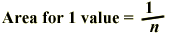

Relative frequency
When all histogram classes are of equal width, histograms are often drawn with a vertical axis giving the frequencies (counts) for each class. An alternative is to label the axis with the proportions of values in the classes. These proportions are also called relative frequencies.
Ages of patients admitted to cardiac unit
Both frequencies and relative frequencies are shown on the following histogram of the ages of patients admitted to a hospital's cardiac emergency unit during a four-month period.
Area equals relative frequency
A stacked dot plot can be changed into a histogram by changing each cross into a rectangle. In this histogram, each value therefore corresponds to a rectangle of the same area.
In a similar way, for all histograms, the area contributed by any value in the data set is the same. The proportion of the total histogram area for each value is:

where n is the number of values in the data set. Therefore,
The proportion of values (relative frequency) in any classes is the proportion of the total area above these classes.
Wood chip length
A batch of wood chips from various species of softwood is analysed for fibre length by a pulp and paper company that has just taken delivery of a large batch. The grade of chips is determined by the average fibre length since the longer fibres make stronger paper. The histogram below summarises the data.
Each of the 50 values in the data set is represented by a rectangle.
Click on the histogram at the value 2.3 on the axis and drag to the right, highlighting the classes of values from 2.2 to 2.8. There are 7 out of 50 values in these classes, so a proportion 7/50 = 0.14 of the values are in the classes. This is also the proportion of the histogram area that is highlighted.